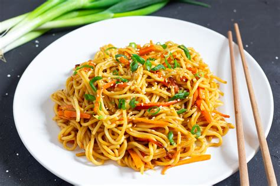

Fried Noodles Recipe

Indonesian Fried Noodles
This tasty noodle dish is the same one my mom used to make for me when I was growing up.
It's definitely comfort food. You can alter it with adding your favorite meats and veggies.
Ingredients
- 3 (3 ounce) packages ramen noodles (without flavor packets)
- 1 tablespoon vegetable oil
- 1 teaspoon olive oil
- 1 teaspoon garlic salt)
- 1 pinch ground black pepper, or to taste
- 5 cloves garlic, chopped
- ¼ cup soy sauce
- ¼ cup sweet soy sauce
- ¼ cup oyster sauce
Direction
- Bring a pan of water to a boil, and cook the ramen until tender, about 3 minutes.
-
Plunge the noodles into cold water to stop the cooking, drain in a colander set in the sink, and drizzle
the noodles with 1 tablespoon of vegetable oil. Set aside.
- Place the chicken strips in a bowl, and toss with olive oil, garlic salt, and black pepper.
Heat 1 tablespoon of oil in a wok over high heat.
- Stir in the ramen noodles, soy sauce, sweet soy sauce, and oyster sauce, mixing the noodles and sauces
- Bring the mixture to a simmer, sprinkle with salt and pepper, and serve hot.
Return to Front Page